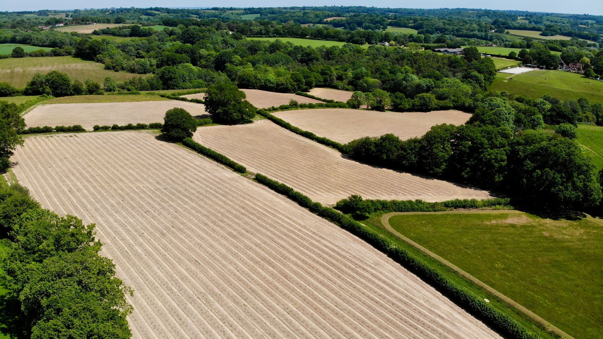

We are a newly-planted, purely family-run Vineyard, found in Kent in the South-East of England.


When we first looked at buying the farm in 2002 we were initially put off by the complete disrepair of the farmhouse. A walk around the fields however made us realise that the work required would be worth it. I said at the time that one day this would be a vineyard. It has taken more than 17 years, but finally the dream has come true.
I stopped working in the City two years ago and much of the time since than has been taken up by preparing the land for the vines. We had to add 40 tonnes of lime to balance the acidity caused by the many years of sheep grazing that had previously taken place on the land. Drainage was then installed in the fields, we were told that this had previously been performed by Napoleonic prisoners of war and certainly many old clay pipes were discovered in the process.
Anyway, after these and other various land preparations we were finally ready to have the vines planted. The German team arrived a day earlier than we were originally advised and when they got planting you could understand why. 7am starts and 8:30 pm finishes meant that our 15,000 vines were just a day’s work.We then had the task of installing all the stakes and vine-guards. We were told we had 2 weeks to complete this before the vines would start sprouting and become attractive to our large rabbit population. I envisaged long days for Sue and I but I sent a hopeful note around to our neighbours on Heartenoak Road asking for the odd hour’s work. They amazed us. For three or four days they started arriving from early morning and worked throughout the day. The guards were almost being installed as quickly as the vines were being planted. The vines were planted in rows over 2 metres apart so social distancing was easy to maintain but this still gave people the opportunity to chat in the sunshine whilst they worked. The turnout of all ages was incredible and the comment when the last vine was safely protected was “what can we do next?”. Thanks to the kindness of the Fitz team we were able to reward them with some excellent bottles of bubbly that went down very well.
We are delighted to be working with the Fitz team, it feels rebellious to be bucking the trend and planting something different to most others. As well as the Reichensteiner and Seyval Blanc we have also planted vines for still wines, Bacchus and Pinot Blanc for white, and Cabernet Noir to give us the potential for a full-bodied red in an above average temperature year or rosé otherwise.
Have a question?
Send Us An Email!
Check out our Instagram @heartenoakvineyard 
Heartenoak Vineyard
At Beals Green Farm,
Heartenoak Road,
Hawkhurst,
Kent
TN18 5EU